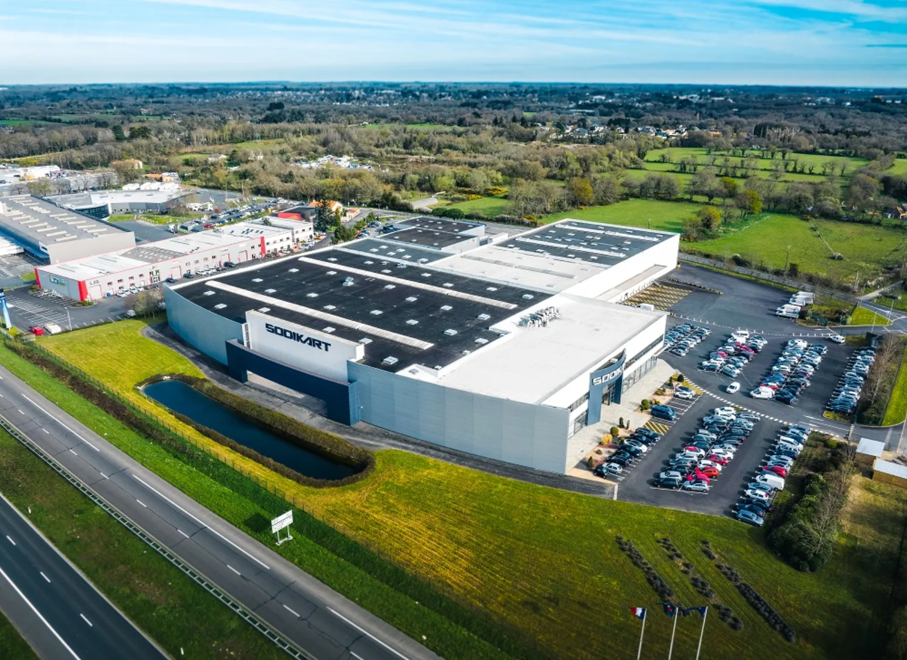
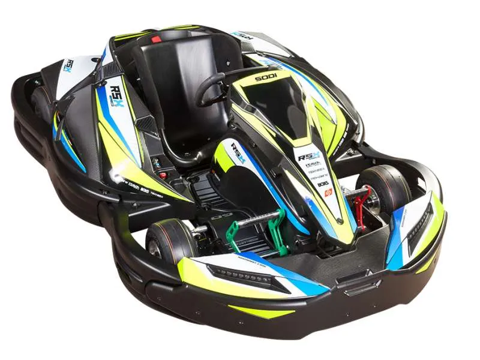
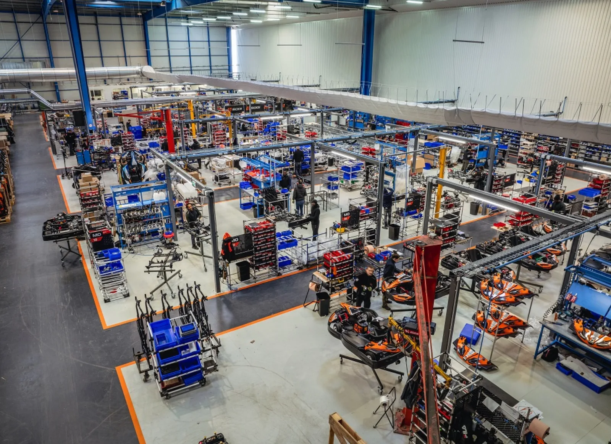

Un industriel nantais devenu le standard mondial.
D'un magasin de pièces et d'un atelier moteurs fondés par Gildas Mérian en 1981 à un groupe intégré de 170 collaborateurs : Sodikart conçoit, fabrique, distribue et anime le karting sur cinq continents. Objectif : 150 M€ de chiffre d'affaires en 2030.
1981 → 2030.
Quarante-cinq ans d'avance.
Trois temps : le magasin de pièces devenu constructeur, l'industriel du kart de location, puis le groupe intégré. Faites défiler : la frise avance.
Création à Nantes
Gildas Mérian, instituteur et pilote de kart, ouvre un magasin de pièces de compétition et un atelier de préparation moteurs.
Circuit de Sautron
Entrée sur le kart de location : Sodikart devient exploitant avant d'être constructeur.
Partenariat Rotax
Importateur exclusif du motoriste autrichien pour la France. Près de quarante ans plus tard, 80 000 moteurs MAX vendus.
Première usine · ITAKA
1 000 m² à Sautron et création d'ITAKA, la distribution de pièces et d'équipements.
Champion du monde
David Terrien, champion du monde Formule A sur châssis Sodi ; titre constructeur.
Usine de Couëron
8 000 à 10 000 m² : Sodikart devient un industriel du kart de location.
BOX'S · Challenge Rotax France
Naissance de l'équipement pilote maison et du championnat Rotax national.
Champion du monde constructeur
Le châssis Sodi au sommet mondial.
Sodi World Series · HEAD SYSTEM®
Lancement du classement mondial de karting loisir et dépôt du brevet HEAD SYSTEM®.

3MK Events · Grand Finals
L'événementiel regroupé ; Sodi fournit les châssis officiels des Rotax Max Challenge Grand Finals.
Premier kart électrique
Le STX aux Masters de Bercy ; création de TEKNEEX.
Sodi Racing School
Ouverture de l'école de pilotage à Salbris.
Alpha Karting
Acquisition du site d'Alès, intégré comme établissement Sodikart en 2020.
KidRacer
Le kart électrique des 3-6 ans.
RSX2 · X2Drive
Les karts 100 % électriques nouvelle génération, moteur ENGEC maison.

Nouvelle usine · nouveaux actionnaires
Siparex ETI, Fonds Transatlantique et Unexo entrent au capital ; transfert du siège et de l'usine à Saint-Herblain ; Sodi Racing USA en Floride.

Champion du monde KZ · Sodi Restart
Giuseppe Palomba champion du monde FIA KZ ; lancement de l'occasion reconditionnée.
Deuxième titre mondial
Rémi Niero directeur général ; lauréat ETIncelles ; Senna Van Walstijn champion du monde KZ, Maksim Orlov Coupe du monde KZ2.
Le Mans · 24 heures
15e finale SWS : 420 pilotes, 47 nations, première course de 24 h, 130 karts neufs.

Objectif 150 M€
Électrification, Amérique du Nord, nouvelles expériences de piste : doubler de taille en gardant la même exigence.
Fabriqué à
Saint-Herblain.
Châssis soudés, peints et assemblés dans la nouvelle usine inaugurée fin 2023, avec un robot industriel dédié au racing. Chaque kart quitte la ligne avec sa fiche identitaire. Trois établissements : Saint-Herblain, Sautron, Alès.
- Bureau d'études intégré, méthodes issues de l'automobile
- Pôle logiciel en Rhône-Alpes, conception de pistes en Slovénie
- ETI « rentable depuis sa création », 70-75 % du chiffre d'affaires à l'export
Un groupe,
dix marques.
SODIKART est le groupe ; SODI signe les karts ; chaque marque fille couvre un maillon de la chaîne, de la pièce à la finale mondiale. Survolez une marque.
Le groupe : conception, fabrication, distribution, accompagnement et animation du karting. ~170 collaborateurs, ~80 M€ de chiffre d'affaires.
Une équipe,
une ambition.
Rémi Niero dirige le groupe depuis janvier 2025 ; Bertrand Pignolet, directeur général de 2013 à 2024, préside LVS World Holding. Au conseil de surveillance : Siparex, Unexo, Origine Partners et GTMH, la holding du fondateur.
Rémi Niero
Directeur général · depuis 01/2025Bertrand Pignolet
Président · LVS World HoldingFabien Philipperon
Direction commercialeThomas Paricard
Marketing & communicationVincent d'Unienville
Direction financièreRégis Picaud
Direction de la productionJean-Philippe Guignet
Direction compétitionGildas Mérian
Fondateur · 1981RSE en
cinq chiffres.
Fabriquer en France, électrifier le loisir, prolonger la vie des karts : la responsabilité de Sodikart se mesure sur la piste, pas dans un rapport de 30 Mo.
Chiffres à consolider avec le rapport RSE du groupe
Dans l'actualité.
Rejoindre
le paddock.
170 collaborateurs passionnés, une usine neuve, des karts qui gagnent le dimanche et roulent partout dans le monde le lundi. Valeurs affichées : esprit de compétition, relation client, qualité, innovation, dimension familiale.
Technicien service client thermique
Diagnostic, support des exploitants, interventions Flying Doctors.
Technicien service client électrique
Flottes RSX2, LRX2, X2Drive, KidRacer ; SODISCAN et charge & verrouillage.
Dessinateur outillage
Bureau d'études, outillages de production pour la nouvelle usine.
Distribuez le n°1
mondial du karting.
84 points de vente dans 46 pays, et des territoires encore à ouvrir. Catalogue location et racing, formation technique, médiathèque, espace Sodiconnect, flux de clients SWS et exclusivité territoriale.